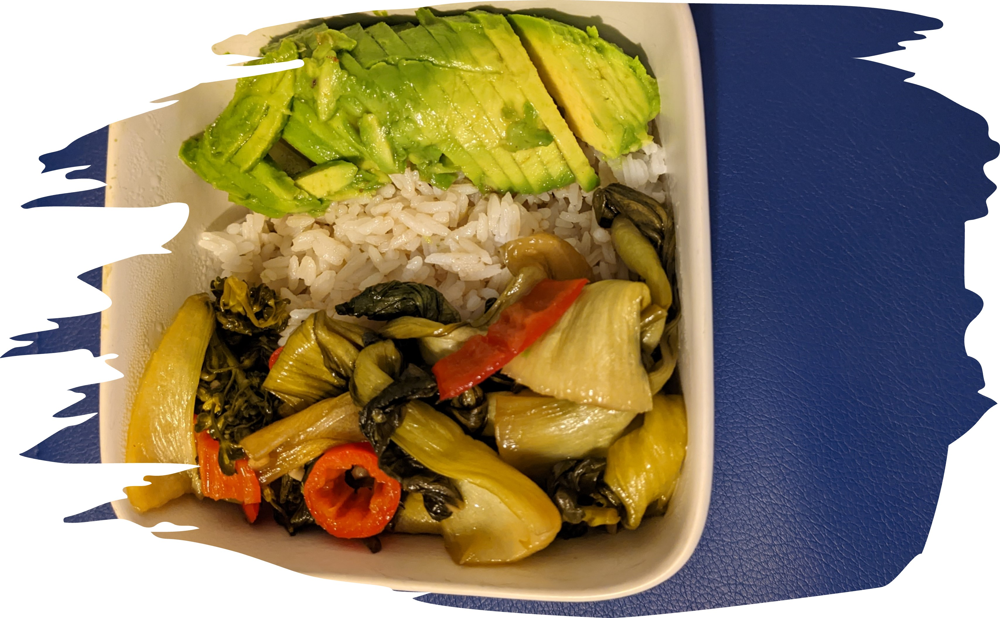

A packful Bokchoy bowl!
Ingredients:
⁘ Baby Bukchoy, Red Chili Pepper, Spinach, Trumpet Mushrooms
⁘ Onion, Garlic, Ginger, Olive oil, & Oyster Sauce
⁘ Pre-made Jasmyn Rice
⁘ 1 Ripe Avacado
⁘ 1 Saucepan
Directions
Step 1: Clean, rinse & cut the bukchoy, Red Chili Pepper, Spinach, & Trumpet Mushrooms
Step 2: Heat the olive oil in the saucepan, add minced Onion, Garlic, & Ginger; then stir for 3min.
Step 3: Add the clean & medium-cut Bukchoy, Red Chili Pepper, Spinach, & Trumpet Mushrooms, stir for 3mins., and add the Oyster sauce.
Step 4: Lower the saucepan to a low-heat and close the lid. Turn off after 10mins
Step 5: Warm up your pre-made jasmyn rice.
Step 6: Thinly slice the ripe avacado.
Step 7: Place all your ingredients in a bowl and enjoy packed bite.
enjoy!